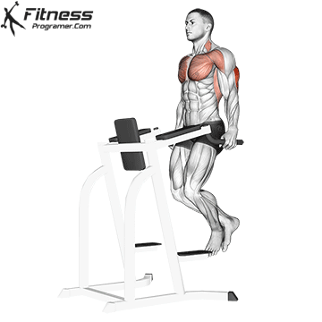
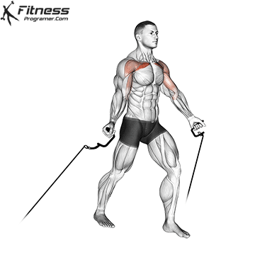

- Ust Gogus:Gogsun dolgun ve yukariyo dagru kalkik gorunmesinin saglar.Incline hareketler ile hedeflenir.
- Orta&Alt Gogus:Gogsun ana kutlesini ve alt hattini olusturur.Duz(Flat) ve negatif acili(Decline)ile hedeflenir.
- Ic ve Dis Gogus Hatlari:Gogsun ortasindaki yarik ve dis cizgilerdir.Serbest agirliklarla tam esneme(strech) ve tepe noktada sikistirma(squeeze)ile hedeflenir.
Antrenman yaparken dikkat etmeniz gerekenler:
- Kurek Kemiklerini Sabitleyin:Benche yattiginizda kurek kemiklerinizi arkada birlestirin ve asagi bastirin.Gogsunuzu one cikarip omuzlarinizi geride tutun.Bu yapilmazsa yuk omuza biner.
- Omuz Sagliginizi Koruyun:Barda tutus genisliginizi ayarlarken dirseklerinizin vucudunuzdan 45-60 derece aci yapmasini saglayin.
- Tepe Noktada Sıkıstır,Dipte Esnet:Agirligi kaldirirken gogus kaslarinizi birbirine yaklastirip sıkın;indirirken gogus kaslarinizin uayip esnedigini hissedin.
- Incline Hareketlere Oncelik Verin:Cogu sporcuda ust gogus geride kalir.Antrenmana ust gogus hareketiyle baslamak daha dengeli bir kas gelisimi saglar.
Gogus icin en iyi egzersizler:
- Incline Dumbell Press:Ust gogus gelisminin kilit anahtaridir.Bench acisini 30-45 derece arasinda tutmak en yuksek gogus aktivasyonunu verir.
- Bench Press:Ust vucut gucunun ve genel gogus kutlesinin klasik temel hareketidir.
- Dips:Vucut agirligiyla yapilan,ozellikle alt gogus ve genel itis gucu icin muazzam bir harekettir.Govdeyi hafif one egerek yapmak gogus katilimini arttirir.
- Cable Fly(Kablolu Sikistirma):Kas uzerindeki gerilimi hareketin ehr santiminde korur.Kabloyu ustten,ortadan,alttan cekerek gogsun farkli liflerini hedefleyebilirsiniz.




Negatifleri Yavaslatin:Agirligi kaldirirken patlayici(1 saniye),indirirken ise kontrollu ve yavas(2-3 saniye)olun.Gogus kaslari negatif fazda ciddi mikron duzeyde yirtilma yasar ve buyur.